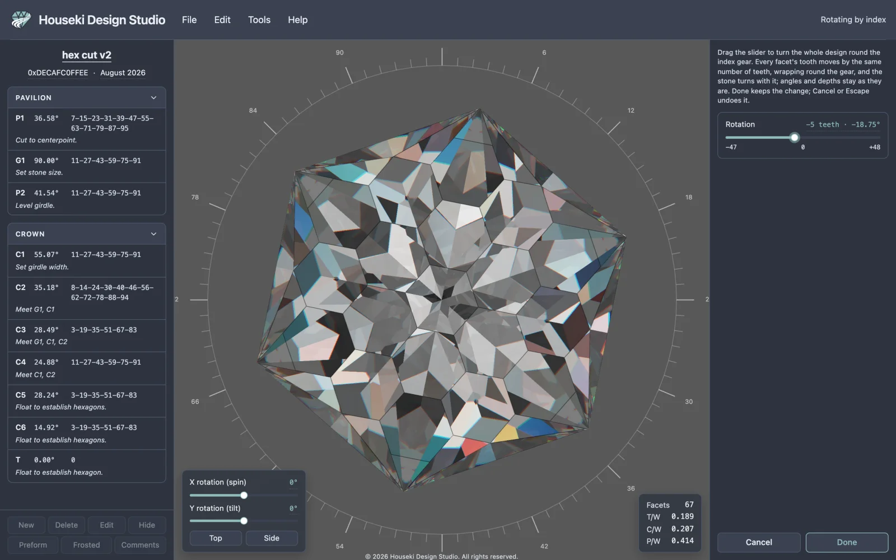
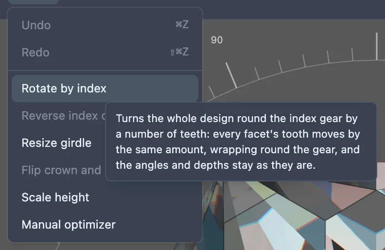
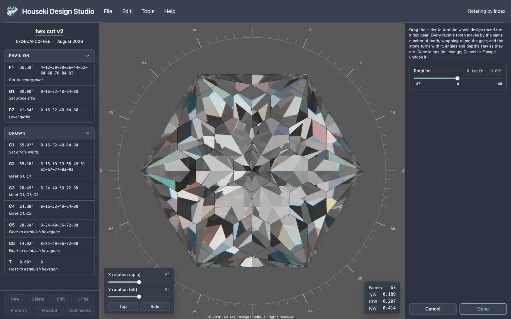
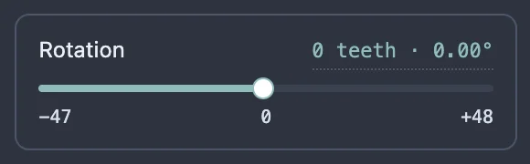
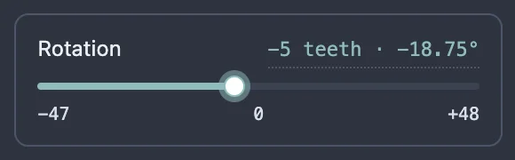
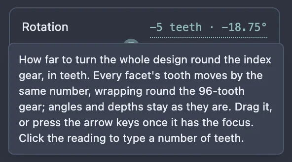
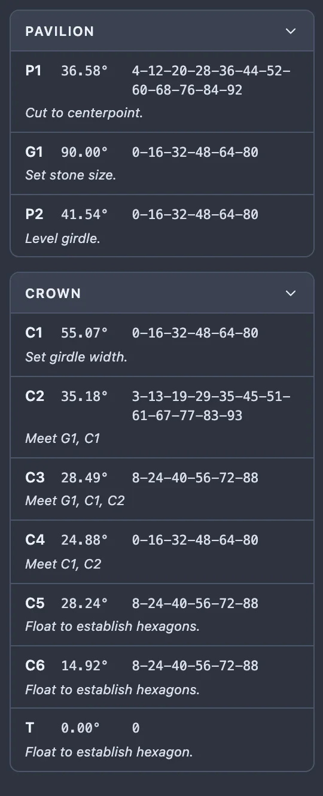
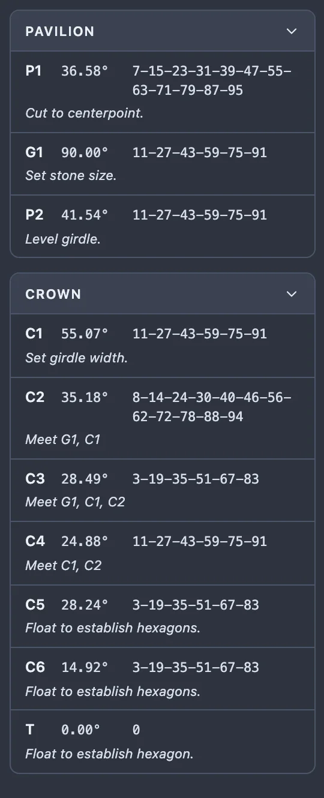
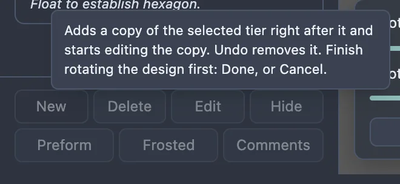
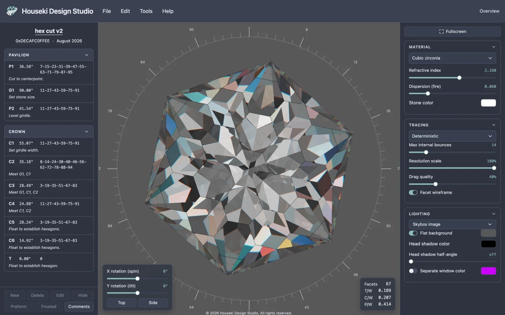

Every facet of a design sits at a tooth of the index gear, the wheel you turn at the machine to set where a facet goes around the stone. Rotate by index mode turns the whole design around the gear by a whole number of teeth: every facet's tooth moves by the same amount, so the cut keeps exactly the same shape and simply starts from a different point on the gear. Use it to line a favourite facet up with a particular tooth, or to match a starting position that suits a piece of rough, without renumbering every tier's teeth by hand. Angles and depths never change.

Choose Edit > Rotate by index from the menu
bar. There is no keyboard shortcut for it. The item is greyed out when there is no design loaded
(a plain .obj mesh has no index teeth to turn) or when another mode, such as editing a
tier, scaling the height or the cutting assistant, is already open. Hovering it then says which one
to finish first, such as "Finish editing the tier first: Done, or Cancel."

The top bar's status at the right reads Rotating by index. The render settings on the right are replaced by a short explanation, a Rotation slider, and Cancel and Done buttons at the bottom. The stone and the view stay exactly where they were, so you watch the facets themselves turn. Seen face up, the ring of index numbers around the stone stays put, which makes it easy to read off where a facet has moved to.


Drag the Rotation slider. Right turns the design to higher teeth, left to lower ones, one whole tooth at a time. The reading above the slider gives the turn in teeth and in degrees of the wheel: on a 96-tooth gear each tooth is 3.75°, so −5 teeth · −18.75° is a turn of five teeth back. The slider's two ends are one full turn apart (−47 to +48 on a 96-tooth gear), so every possible position appears exactly once.
Once the slider has the focus (click its thumb, or drag it once), ← and → (or ↓ and ↑) move it one tooth at a time, and Home and End jump to its two ends. To type an exact turn, click the reading and enter a number of teeth, then press Enter. Any whole number works: a number past the ends wraps round the gear, so typing 100 on a 96-tooth gear gives +4, and 96 is the same as 0.


The cutting instructions on the left follow the slider as you move it. Every tier's teeth move by the same number, and a tooth that passes the end of the gear carries on from 0, so the numbers always stay on the gear. Each tier's teeth are then listed from lowest to highest, as they are when you open a design. Turning a tier cut at 0-16-32-48-64-80 back by one tooth, for example, gives 15-31-47-63-79-95, not 95-15-31 and so on.


Only the teeth change. Every tier keeps its name, its place in the cutting order, its angle, its depth and its notes, and the index gear itself (its number of teeth) is not touched. The table stays at 0, and so does a flat culet: each lies across the stone's axis, so it looks the same at every tooth. Because the stone is only turned, the proportions and facet count at the bottom right of the render do not change either.
Turning a design never breaks its symmetry. A design with six equal sections still has six after any turn, and a design whose two halves mirror each other still does. What moves is where the mirror line sits on the gear: most designs have it at tooth 0, and after a turn it has moved by the same number of teeth as everything else. On a 96-tooth, six-section design, for example, a mirror line stays at tooth 0 only for turns that are a multiple of 8 teeth.
While the mode is open, the rest of the design is held: the tier toolbar's buttons are greyed out (hovering one says "Finish rotating the design first: Done, or Cancel."), tiers cannot be dragged into a new order or have their notes edited, and the other modes' items in the Edit and Tools menus are greyed out too.

Click Done to keep the turn and close the mode. It is filed as a single step in the studio's edit history, however many times you moved the slider first, and the render settings come back. Click Cancel, or press Escape, to put every facet back on the tooth it was on and close the mode without recording anything. Leaving the slider at 0 and clicking Done records nothing either.

While the mode is open, Undo and Redo (the Edit menu items, and Cmd+Z / Cmd+Shift+Z on a Mac, Ctrl+Z / Ctrl+Shift+Z elsewhere) step back and forth through your own moves of the slider in this session. Each drag, key press or typed number is one step. Once you leave the mode they work on the whole design again, and if you kept the turn, one Undo takes back the whole rotation.
| Action | How |
|---|---|
| Open the mode | Edit > Rotate by index |
| Turn to higher teeth | Drag the slider right; or, with it focused, press → or ↑ (one tooth) |
| Turn to lower teeth | Drag the slider left; or, with it focused, press ← or ↓ (one tooth) |
| Jump to either end of the slider | Home or End, with the slider focused |
| Type an exact turn | Click the reading, type a number of teeth, press Enter (Escape abandons the typing) |
| Undo / redo this session's moves | Cmd+Z / Cmd+Shift+Z on a Mac, Ctrl+Z / Ctrl+Shift+Z elsewhere |
| Keep the turn and leave | Done |
| Discard the turn and leave | Cancel, or Escape |
To move a single tier to other teeth instead, edit that tier and use the index gear's ruler; see Editing facets by tier.